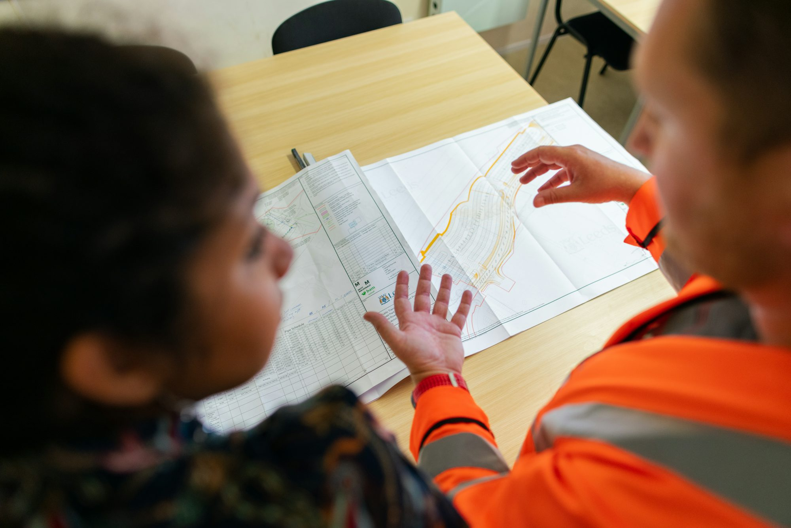
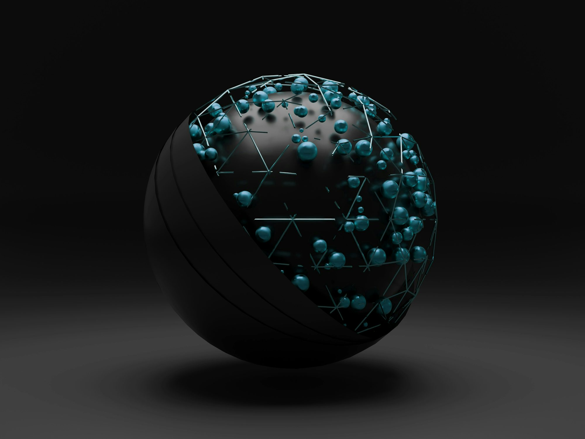
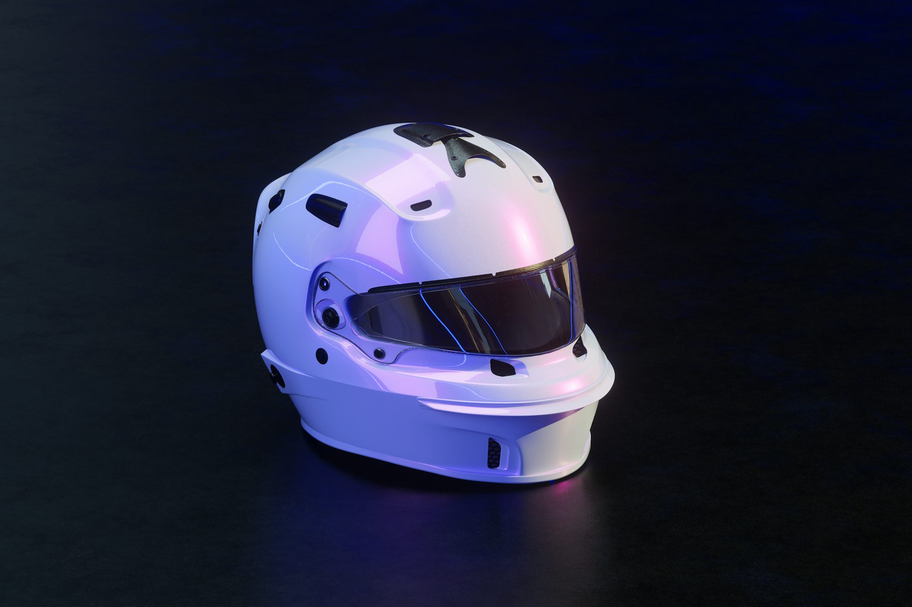

The Future of Work: Embracing Remote and Hybrid Models
This article examines the evolution of work in the digital age, focusing on the rise of remote and hybrid work models and their implications for businesses and employees.Panorama

Topics archive
17 February 2025
Sophia Martinez
The Evolution of E-Learning: Shaping the Future of Education
This article explores the rise of e-learning, its technological advancements, and how it is transforming education by making it more accessible and engaging for students worldwide.
27 January 2025
Navigating the Future of Software Development: Key Trends and Technologies
This article explores the latest trends and technologies shaping the future of software development, emphasizing best practices and emerging paradigms.
10 May 2025
Oliver Schmidt
The Evolution of Renewable Energy: Harnessing Nature for a Sustainable Future
This article examines the advancements in renewable energy sources, their benefits, challenges, and the role they play in creating a sustainable future for our planet.

11 September 2025
Liam Thompson
The Future of Work: Embracing Remote Collaboration and Digital Transformation
This article examines how remote work and digital technologies are reshaping the workplace, exploring the benefits, challenges, and future trends in the evolving landscape of work.
15 November 2024
Emily Chen
The Evolution of Augmented Reality: Bridging the Physical and Digital Worlds
This article explores the advancements in augmented reality (AR) technology, its applications across various industries, and its potential to enhance user experiences in everyday life.
05 October 2024
Sofia Ramirez
The Evolution of Work: Embracing Remote Collaboration
This article explores the rise of remote work, its impact on collaboration, productivity, and the future of the workplace.
08 February 2025
Sofia Bennett
The Evolution of Communication Technologies: From Wires to Waves
This article explores the evolution of communication technologies, highlighting key advancements and their impact on society and connectivity.